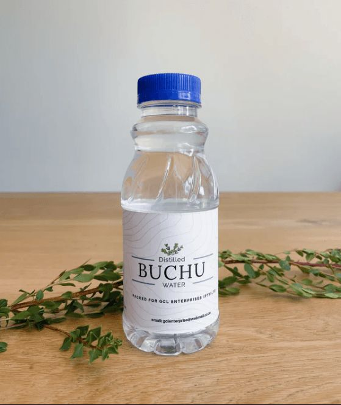
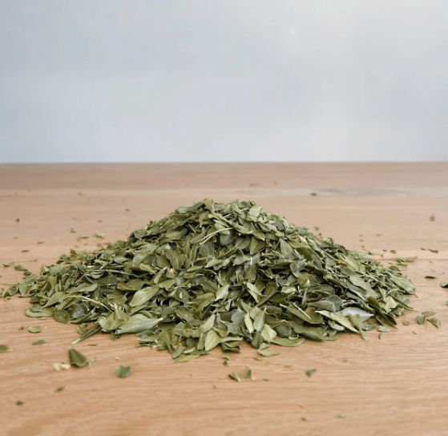
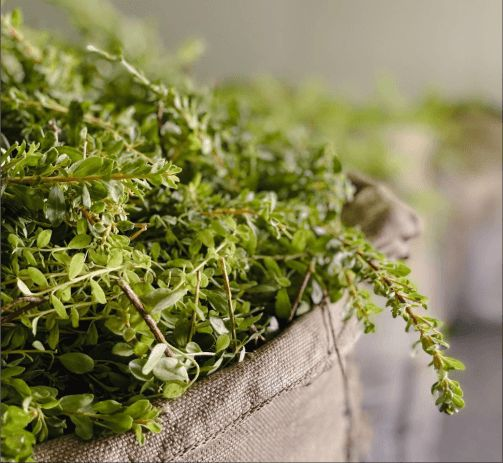
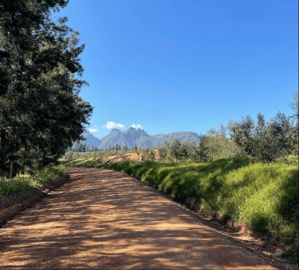

About Us
Waterfall Health Farms, located on the scenic slopes of the Du-Toitskloof mountains, has been a beacon of quality and sustainability in the Buchu industry since 1969. We pride ourselves on producing high-quality Buchu oil and products, serving a diverse clientele from the flavor and fragrance sectors to the expanding medicinal market.
Our journey began when Edward Godfrey, our founder, discovered the unique properties of Buchu. Through dedication and innovation, he established a legacy that has withstood challenges such as fire and market fluctuations, making us one of the oldest Buchu farms in South Africa.
At Waterfall Health Farms, our commitment extends beyond cultivation. We cherish the relationships with our community and customers, striving to create a thriving environment for everyone connected to our farm. Our focus on sustainability ensures that we preserve this precious resource for future generations while enhancing the well-being of those who experience our Buchu products.
Health Benefits of Buchu
Buchu, a Fynbos that is native to the Western Cape of South Africa is widely recognised as one of South Africa's most valuable medicinal plants. It is one of the few fynbos species that has successfully transitioned into cultivation at a large scale. Packed with bioflavonoids, antioxidants and vitamins, Buchu products help the body combat free-radicals and enhances general wellbeing. The Bioflavonoids naturally occuring in Buchu have greater antioxidant effects than Vitamins C, E, Selenium and Zinc, and prevent formation of oxidised cholesterol.
Health Benefits of Buchu
Powerful Antioxidant - Natural Antihistamine - Natural antiviral - Anti-Aging - Antiseptic & Anti-Fungal - Anti-inflammatory & Antibacterial - Lowers blood pressure - Lowers blood sugar - Natural diuretic - Assists with joint pain - Assists with Urinary Tract, bladder and prostate infections - Assists with kidney function - Cardiovascular benefits - Can relieve Eczema and skin disorders - Relieves itching caused by allergic reactions and insect bites - Natural insect repellent - Contains Bioflavonoids
Buchu is naturally caffeine and sugar free.

Our Products
Discover our range of Buchu products, each crafted to enhance health and wellness through nature’s finest ingredients.

Loose Leaf Buchu Tea Leaves
Organically grown at Waterfall Health Farms

Spring Distilled Buchu Water
Our Spring Distilled Buchu Water is a natural health tonic made from the super herb Buchu. It is a powerful anti-oxidant, anti-inflamatory and contains vitamins A,B and E.
Gallery




Contact Us
We'd love to hear from you — reach out to us anytime.